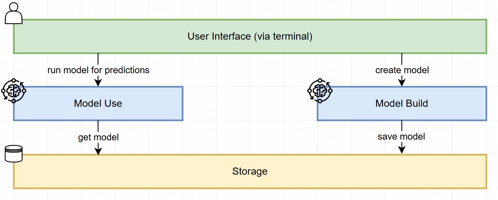

Project 1: Implementation of a Fully Connected Neural Network (FCNN)
Introduction
Background
A Fully Connected Neural Network (FCNN) is a type of artificial neural network where every neuron in one layer is connected to every neuron in the next layer. This architecture is widely used for tasks such as regression and classification. The process begins with one node for each feature in the input data. These inputs are processed through one or more hidden layers, each containing a specified number of neurons. In a fully connected network, every neuron in a given layer is linked to all neurons in the preceding layer, giving the network its name. Finally, the outputs are computed in the last layer, providing the model’s predictions.
Scope
This project should demonstrate the implementation of a fully connected neural network (FCNN) for a regression task using Python. The aim is to build a scalable pipeline that preprocesses data, trains a neural network and evaluates its performance while providing an option for customization through user inputs via console (CLI). In a second step it should be possible to use the model with new data to get predictions by AI solutions.
Deliverables (High-Level)
- The base layer that builds and stores the FCNN model together with all parameters and other configurative information while also providing options for parameter tuning during model creation via the console (CLI).
- The usage layer which allows to use the saved model with new data. This part will aims at creating predictions and storing the outcome in a CSV file.
- Feature engineering including quality checks, encoding and scaling must be included.
- The solution should not have any hardcoded file sources or a hard coded file structure but rather allow users to use it with various valid dataset.
The solution will be built using Python with the TensorFlow library for all machine learning capabilities. The machine learning algorithm used will the introduced FCNN and the parameters for finetuning will include the test size, number of hidden layers, number of neurons per layer, epochs, batch size and validation split. All data will be obtained from the ICU Machine Learning Repository.
High-Level Design
